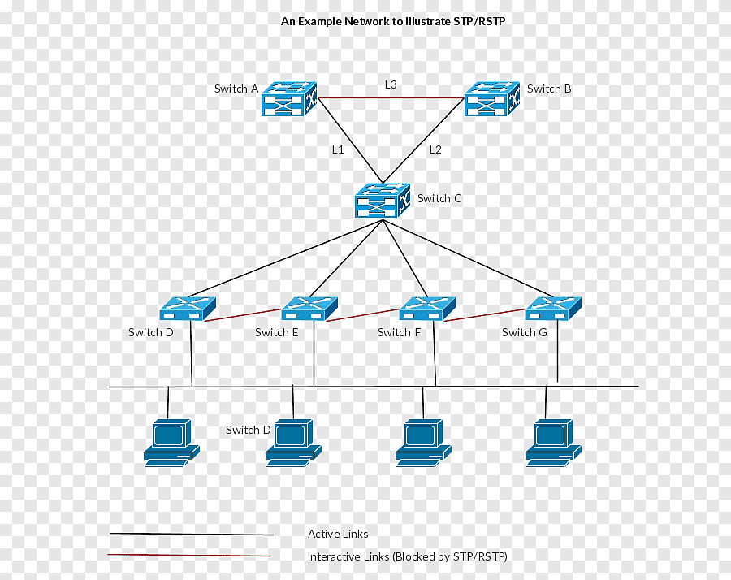
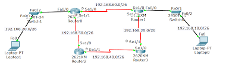
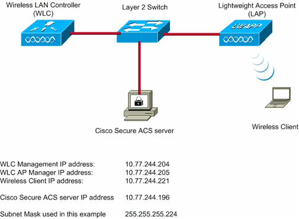

¿Qué he aprendido en este módulo?
En Redes Locales he adquirido conocimientos fundamentales sobre cómo se comunican los dispositivos en una red. He aprendido a diseñar, implementar y mantener redes cableadas e inalámbricas, utilizando herramientas de simulación y dispositivos reales.
Competencias Desarrolladas
- Diseño de topologías de red física y lógica.
- Asignación de direcciones IP (estáticas y dinámicas).
- Configuración de switches y routers mediante consola.
- Creación de redes LAN y segmentación mediante VLAN.
- Uso de herramientas como Cisco Packet Tracer para simular redes.
- Instalación y configuración de redes Wi-Fi seguras.
Herramientas Utilizadas
Cisco Packet Tracer
Switches y routers reales
IP Calculator / Subnetting Tools
Ejemplos de mis Trabajos

Topología de red simulada con VLAN, switch y router.

Ejemplo de configuración básica de router usando CLI.

Red Wi-Fi segura configurada con WPA2 y direccionamiento dinámico.